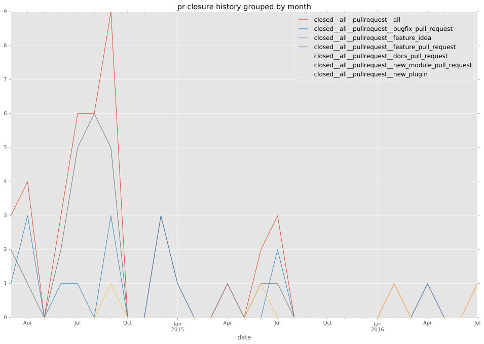

total issue counts
bugfix pull request: 20
docs report: 1
pullrequest: 53
docs pull request: 6
feature pull request: 27
feature idea: 2
issue: 15
bug report: 12
issue history
pullrequest history

days open by issue type
feature pull request
count: 31
std: 61.0832676876
min: 0
max: 200
median: 16.0
mean: 48.9677419355
all
count: 79
std: 55.1955421576
min: 0
max: 200
median: 9.0
mean: 36.8734177215
pullrequest
count: 0
std: nan
min: nan
max: nan
median: nan
mean: nan
docs pull request
count: 9
std: 47.5841360119
min: 0
max: 145
median: 0.0
mean: 19.0
docs report
count: 1
std: nan
min: 17
max: 17
median: 17.0
mean: 17.0
bugfix pull request
count: 28
std: 43.4903595715
min: 0
max: 147
median: 1.0
mean: 26.3214285714
feature idea
count: 0
std: nan
min: nan
max: nan
median: nan
mean: nan
issue
count: 0
std: nan
min: nan
max: nan
median: nan
mean: nan
bug report
count: 10
std: 70.3688693797
min: 0
max: 199
median: 12.5
mean: 47.0
closures grouped by total days open